Coordinación clínica (Track) y farmacia de investigación (Pharma), andando sobre datos reales.
Lo que separa a un boceto de una plataforma —aislamiento de acceso verificado en vivo, cada acción trazada y recuperable, reglas clínicas que valida el servidor y el cronograma que se genera solo al randomizar— es justo lo invisible en una imagen, y lo único que costó construir este mes.
Pablo, hace un mes Spira era una idea con pantallas de muestra. Hoy es una plataforma que se usa: alguien inicia sesión con su usuario, da de alta un paciente real, ve sus visitas, reprograma una fecha, recibe medicación y el inventario se mueve solo. La diferencia entre un mockup y esto no es cosmética. El mockup es una foto: se ve bien pero no guarda nada, no valida nada, no distingue quién es quién. Lo que armamos este mes es el sistema por debajo de la foto —el que cuesta y el que da valor— y encima de él dos módulos que funcionan de verdad: Track (la coordinación clínica, con el ciclo completo de la visita) y Pharma (la farmacia de investigación, con recepción, stock por lote y producto de investigación).
Lo caro, lo que un boceto nunca tiene, es lo que quedó hecho: cada persona ve únicamente lo suyo porque la base misma lo hace cumplir fila por fila —lo verificamos en vivo, no es un adorno de pantalla—; cada acción sensible queda registrada de forma imborrable, con quién, qué y cuándo, y una foto del antes y el después (ya probamos recuperar un paciente borrado desde ese registro); y las reglas clínicas duras las valida el servidor, no la buena memoria del operador: no se puede randomizar sin firma y screening previos, y una excursión de temperatura frena el ingreso de stock antes de que entre. Todo esto corre sobre una base desplegada en producción (São Paulo, Ley 25.326), auditable ANMAT / ICH-GCP, pasada por dos rondas de revisión de seguridad buscándole a propósito el punto flojo, con veredicto aprobado.
En números del mes: 39 actualizaciones de base aplicadas en orden, que cubren de punta a punta identidad y permisos, coordinación clínica, farmacia y producto de investigación; el catálogo de farmacia sembrado con 24 drogas y 48 medicamentos del centro; y verificación de punta a punta en el navegador sobre el flujo real, incluidas pruebas con kits reales del sponsor —que de paso revelaron cómo vienen codificados y evitaron comprar un lector 2D que no hacía falta. No es una demo maquillada: es el sistema operando el flujo real del centro.
Una aclaración sobre las capturas que siguen: vas a ver pantallas con poca carga. Es deliberado. Primero el sistema —que funcione y sea seguro—; volcar la información del centro es la parte rápida y viene después.
Antes que los módulos, lo que cambió es el marco: la app dejó de arrancar en una pantalla provisoria y ahora recibe a cada persona con una entrada profesional y su día ya armado. Es la primera señal de que esto es una herramienta de trabajo, no una maqueta.
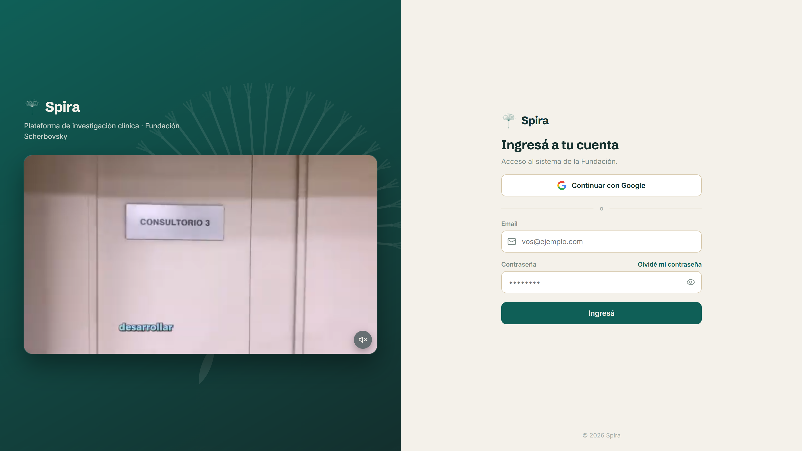
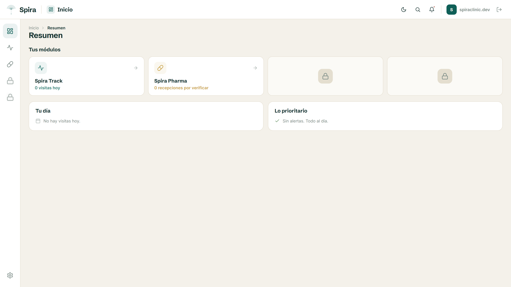
Esta sección no lleva capturas a propósito: lo importante acá es invisible en una foto, y ese es justamente el punto. Es la parte que cuesta, la que hace que el sistema sea auditable de raíz y no de discurso. 39 actualizaciones de base, aplicadas en orden y nunca reescritas, cubren de punta a punta identidad, coordinación clínica, farmacia y producto de investigación.
El diseño de la base pasó por dos rondas de revisión adversarial —gente intentando romperlo a propósito— con veredicto aprobado, y esa misma vara se aplicó todo el mes al código: cada rama grande salió con su propia revisión limpia. Nada de esto certifica por sí solo, eso lo dan los organismos; pero ubica al sistema exactamente donde un auditor de ANMAT viene a mirar: trazable, atribuible, íntegro y recuperable. Y deja algo más: cualquier tablero de métricas puede alimentarse de acá, porque los números salen de la operación misma —sin doble carga.
Track es la coordinación clínica del centro, y este mes quedó con lo grueso funcionando sobre datos reales. No es un tablero decorativo: modela el recorrido real del paciente por el estudio y por el día, y captura los momentos clínicos sensibles —screening, randomización— en el punto correcto, de forma trazable. Le quedan retoques, pero el corazón ya opera.
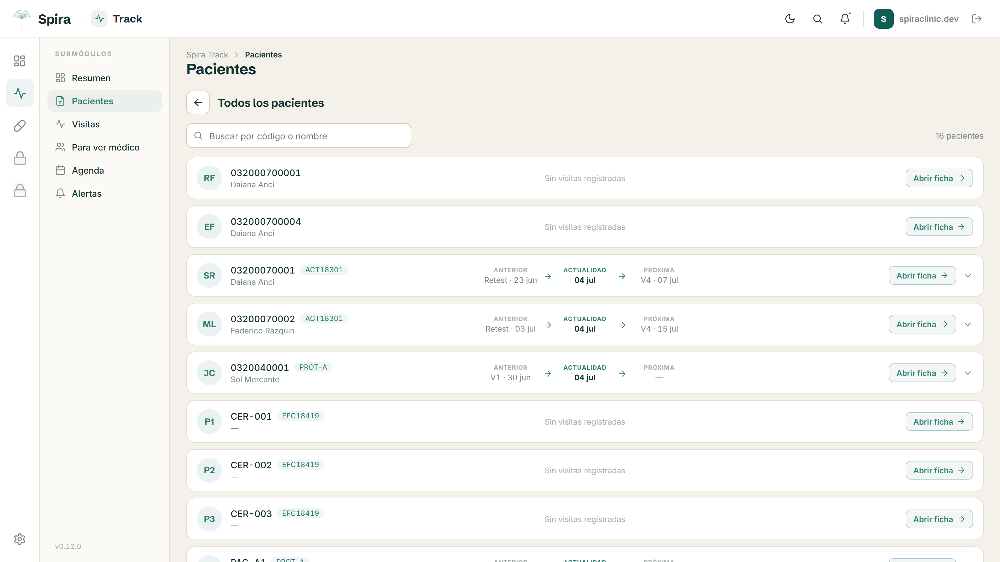
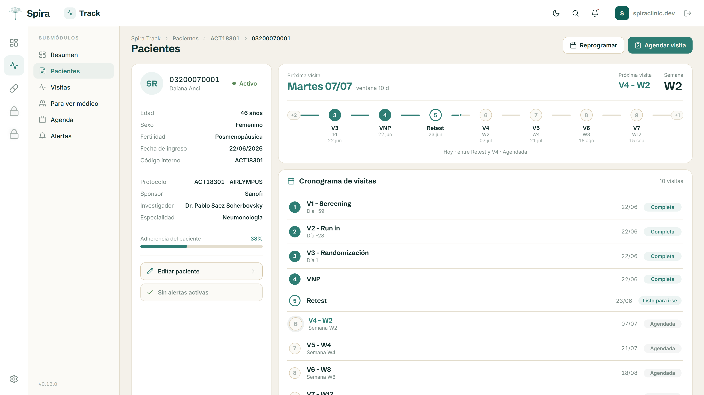
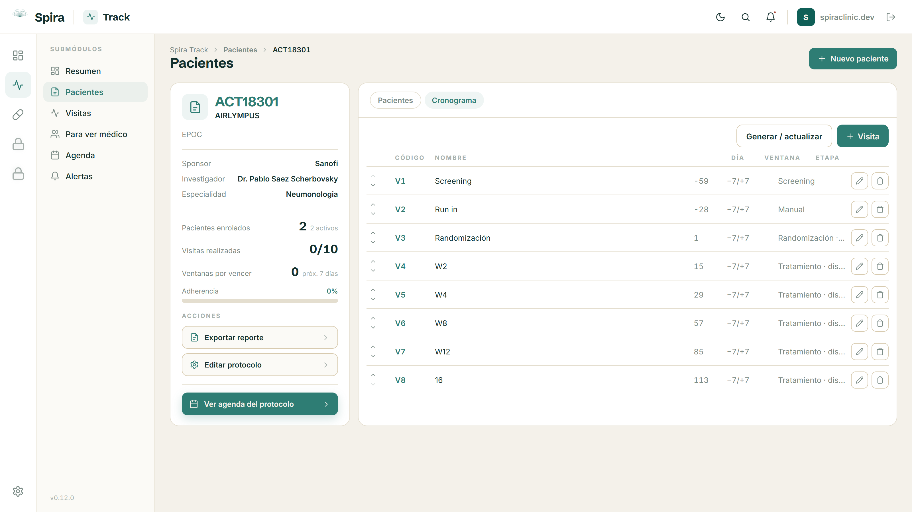
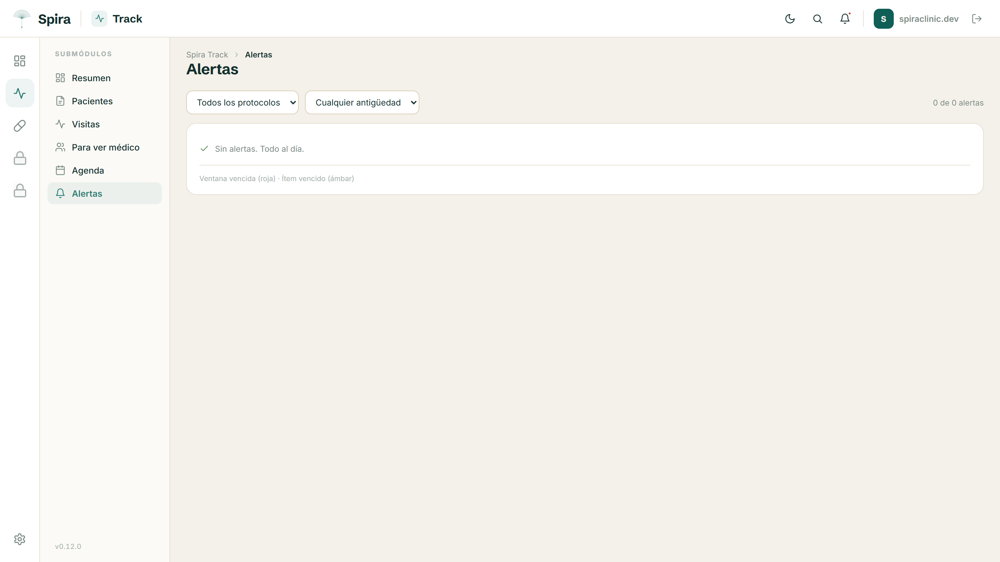
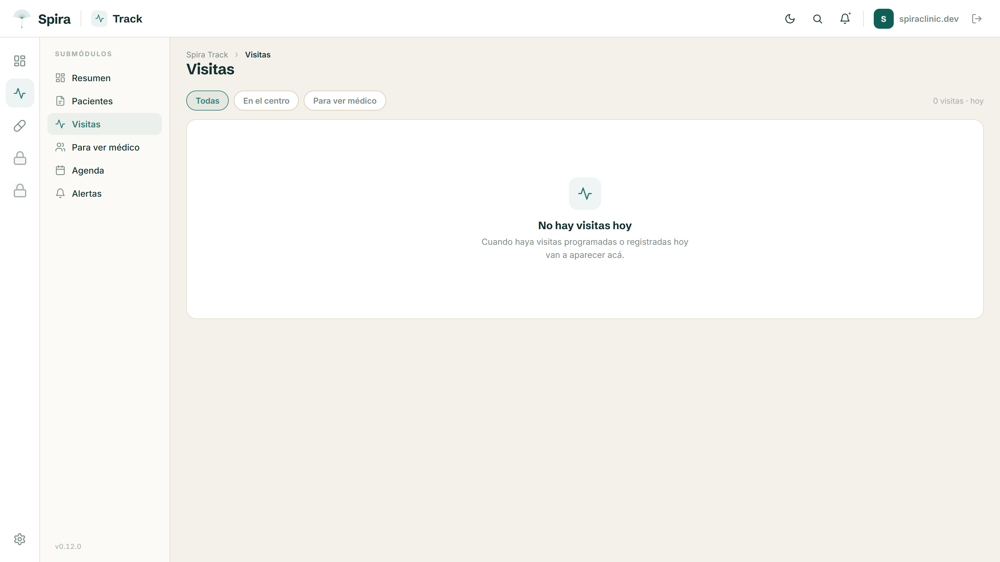
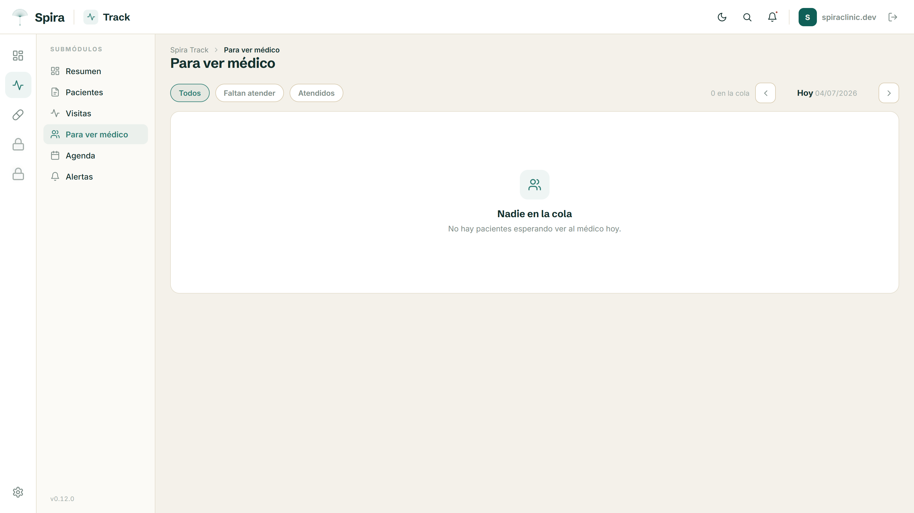
Pharma es el módulo central —por decisión de negocio, una sola farmacia atiende todos los protocolos, así que ve todo el stock. Este mes prioricé ponerlo en funcionamiento porque entendí que es lo urgente, y nació de cero hasta funcionar de punta a punta: se recibe medicación, se verifica en dos pasos y recién ahí se mueve el inventario, con trazabilidad por lote como pide ANMAT. Distingue tres realidades regulatorias sin mezclar inventarios —farmacia de protocolo, farmacia ambulatoria y el producto de investigación del sponsor— y todo el ingreso pasa por un asistente guiado con desplegables, para reducir al mínimo el error del operador.
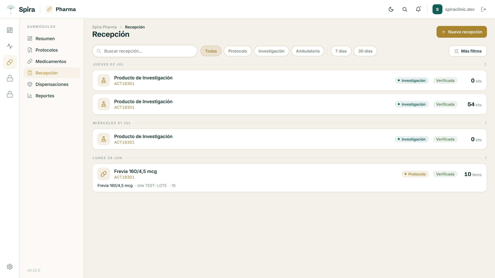
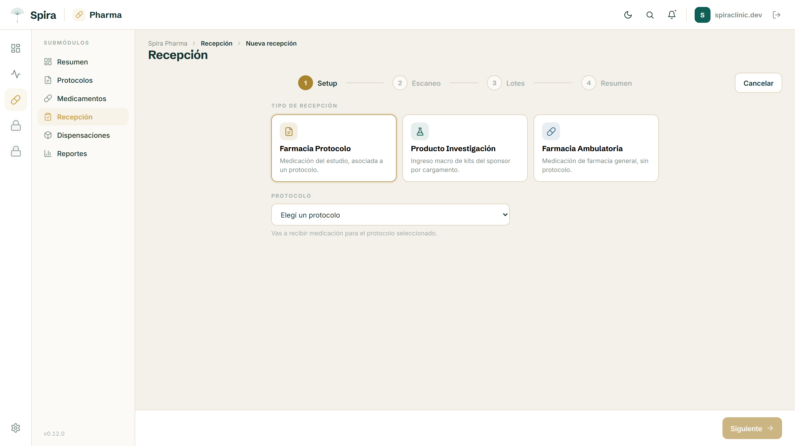
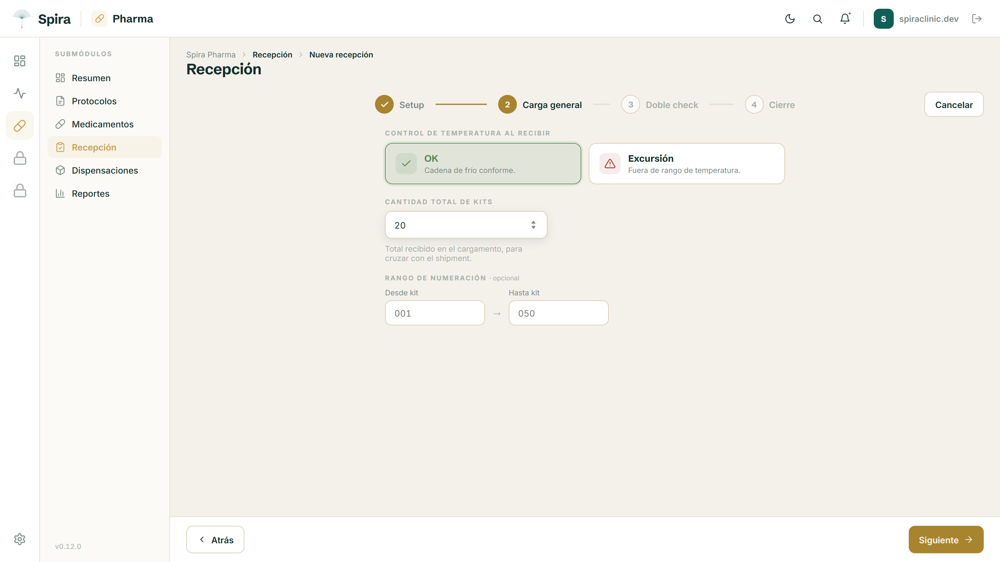
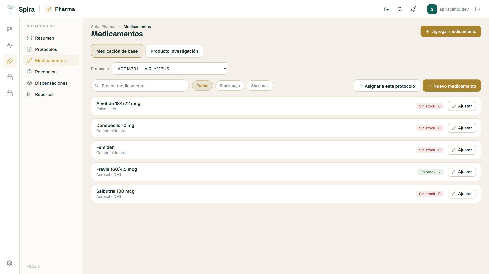
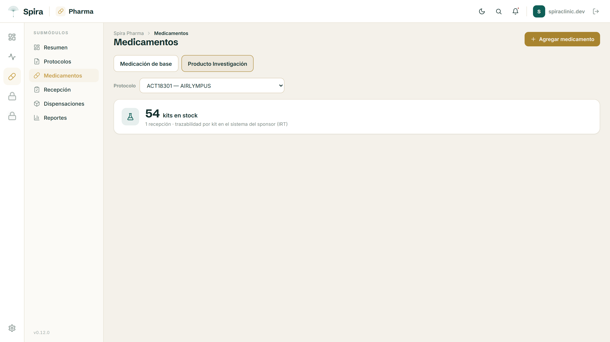
En la última reunión hubo un cambio fuerte de objetivos y aparecieron definiciones y prioridades que yo no tenía sobre la mesa —algunas de las cuales chocan con decisiones ya construidas en el sistema actual. Prefiero decirlo claro y no maquillarlo.
Ahí entra TrialMetrica. Lo tomo en serio: es el sistema que hoy te funciona y marca la vara de lo que el centro necesita ver —regulatorio, coordinación, tableros. La convergencia que veo es natural, porque son capas distintas de una misma cosa: Spira construye la capa donde el dato nace y se hace confiable (quién puede verlo, qué queda registrado, qué reglas se cumplen), y esa misma información puede alimentar los tableros que ya usás, con los números saliendo solos de la operación diaria en lugar de cargarse aparte. Cómo se ensambla —Spira como parte de TrialMetrica, o TrialMetrica leyendo de Spira— es exactamente el tipo de definición que quiero cerrar con vos.
El otro caso concreto ya lo resolvimos y sirve de ejemplo del criterio: el producto de investigación estaba modelado para rastrearse kit por kit, y vos definiste que se recibe de forma macro por cantidad total por protocolo, porque esa trazabilidad fina ya la lleva el sponsor en su sistema (IRT) y duplicarla no le sirve a nadie. Reorientamos el módulo a ese criterio sin romper lo auditable —de hecho sumando un control: ahora una excursión de temperatura bloquea el ingreso. Eso es lo que quiero mostrar: el sistema se dobla a la realidad del negocio cuando cambiás el criterio, en lugar de imponerle al centro cómo trabajar.
Por eso este mes prioricé Farmacia, que entendí que es lo urgente de poner en funcionamiento; Track ya tiene lo grueso andando y le quedan retoques. Quedo atento a la reunión de la semana que viene para terminar de alinear objetivos: cuanto antes cerremos las definiciones que faltan, más de esos ~50 días quedan para construir sobre firme y no para rehacer.
En un mes Spira dejó de ser un boceto y pasó a ser una plataforma que se usa, con dos módulos funcionando sobre datos reales y una base auditable de raíz. Entiendo la urgencia —quedan alrededor de 50 días para la fecha límite— y la tengo presente en cada decisión. Pero mi orden de prioridades no cambia, y creo que coincidís: primero que funcione, después que se vea bien, y por encima de todo que sea seguro.
En una farmacia de investigación con datos clínicos reales, apurar a costa de la seguridad no es ir más rápido: es acumular deuda que después se paga cara en una inspección. Este mes las tres cosas avanzaron juntas: lo que mostramos funciona, ya respira el lenguaje "Sereno" —que además quedó documentado como especificación, así el pulido es repetible en cada pantalla nueva y no un retoque artesanal—, y descansa sobre un núcleo trazable y recuperable. Quedo a disposición para mostrarlo andando cuando quieras, y atento a la reunión de la semana que viene para alinear lo que sigue.